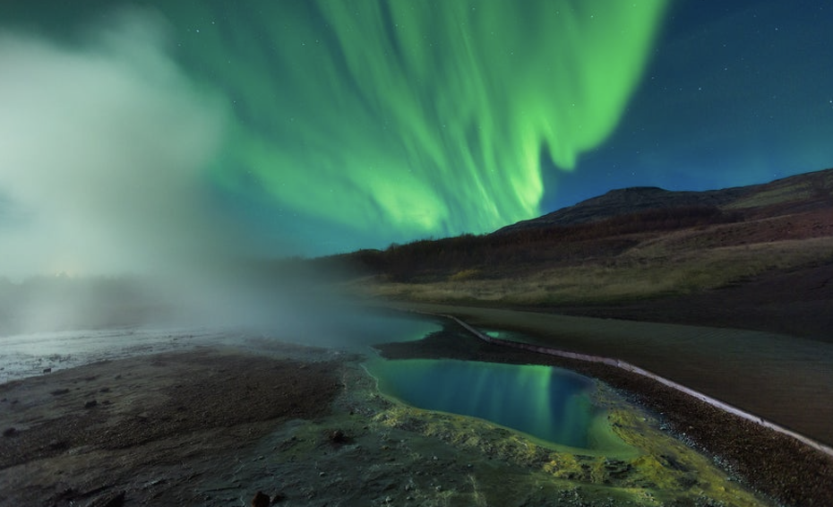
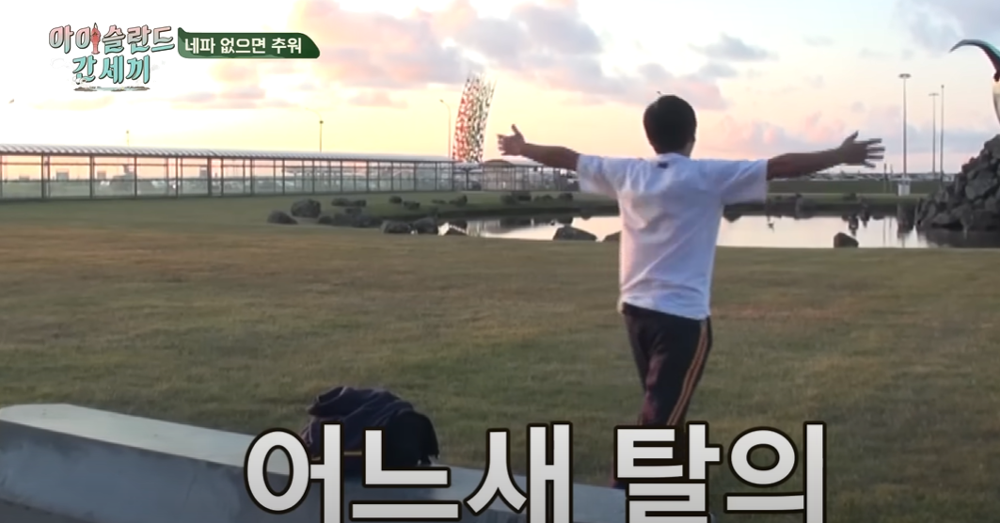
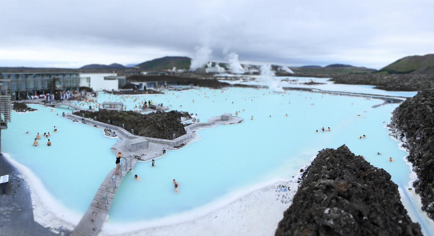
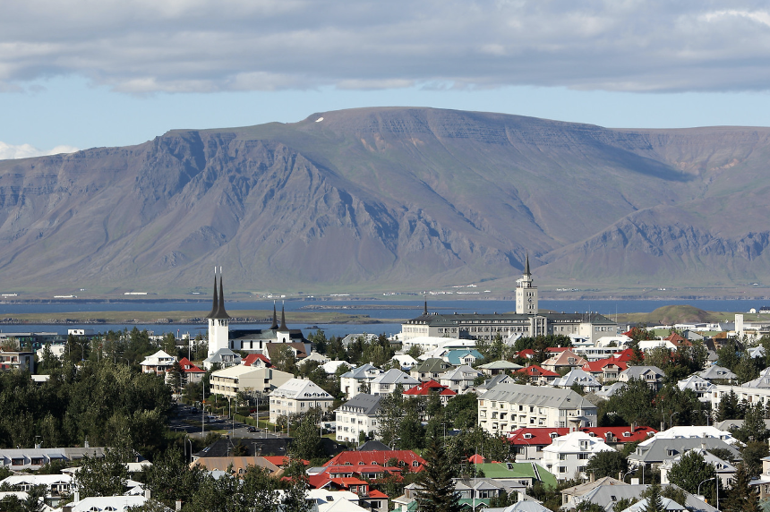
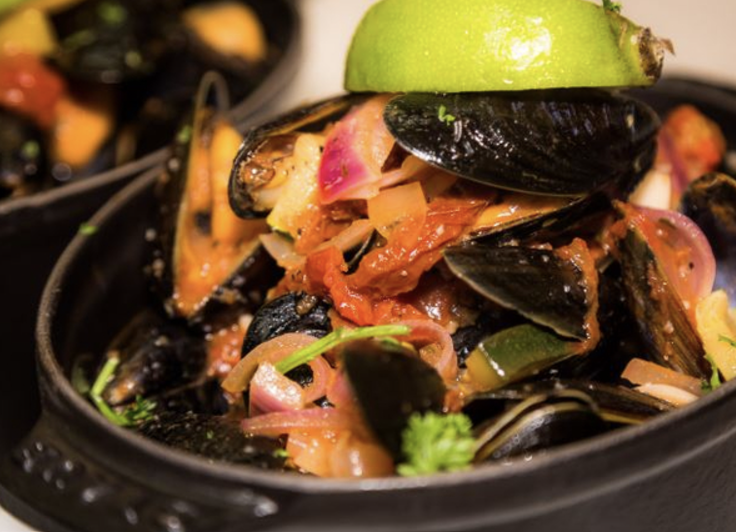
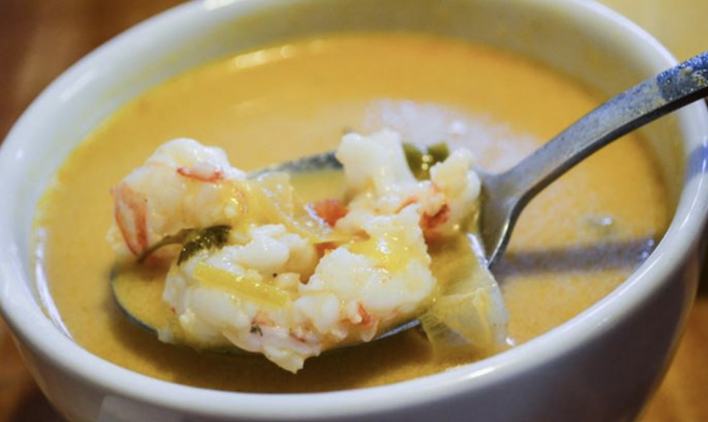
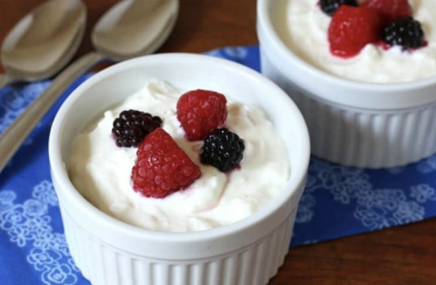
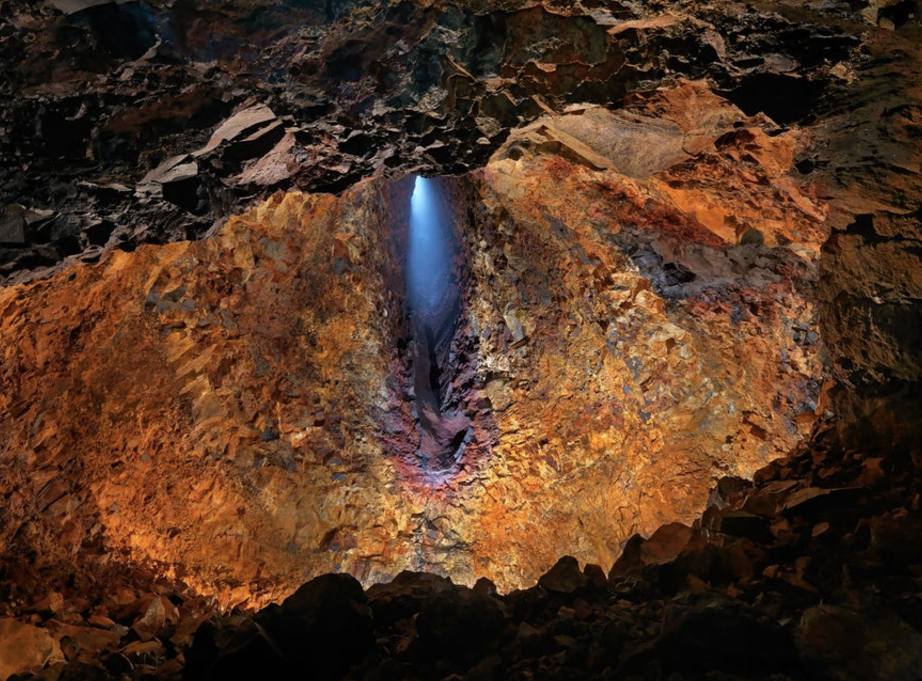

1. 아이슬란드에 대해서
아이슬란드는 북유럽의 섬나라이다. 대한민국과 영토면적이 가장 비슷한 나리이지만, 인구수는 차이가 많이 난다. 좁은 섬나라이지만 강물이 사막을 지나 흐르고 뜨거운 용암이 얼음에서 분출되는 놀라운 광경도 볼 수 있다. 좁은 나라이지만 철도 시스템이 없기 때문에 대중교통이나 렌트카를 이용해야하는데 버스는 비용이 비싸고 운행 횟수가 적어 렌트카가 필수적으로 여겨진다. 대부분의 여행자들이 수도와 동시에 국제 공항이 있는 '레이카비크'에서 내려 여정을 시작한다.
2. 아이슬란드의 기후
고위도 치고는 상당히 온화한 기후이다. (모 방송에서도 시원하다며 겉옷을 벗었다... ) 하지만 날씨가 변덕적이기 때문에 따뜻한 옷은 필수이다. 또한, 저기압이 발달해서 특유의 우중충한 날씨가 이어져 이것이 오로라를 보는데 방해하기도 한다. 맑은 날씨의 오로라를 보는 것은 기적에 가깝다고 한다
3. 아이슬란드에서 꼭 가봐야 할 곳들
1. 블루 라군
차가운 공기, 따뜻한 물 ! 블루 라군은 아이슬란드의 남서쪽에 위치한 평균온도가 40도가 넘는 지열 스파 시설이다. 야외 수영장과 음식점 등이 존재해 하루를 보내기도 좋다. 풍부한 미네랄과 규소, 그리고 형형색색의 해조류 덕분에 블루 라군의 물은 놀랍도록 아름다운 푸른색을 띤다. 푸른 물과 대기에 흐릿하게 낀 수증기들은 이곳을 더욱 특별하게 만들어준다.
2. 레이캬비크
아이슬란드의 수도이자 세계 최고 위도상의 수도이다. 아이슬란드 최대의 도시답게 다양한 상점들, 박물관, 레스토랑, 카페가 있어서 조금 여유를 가지고 쉬기 좋다. 옛 항구 지역이 보존되어 있는 '그란디'는 다양한 예술작품과 옛 아이슬란드를 느낄 수 있는 아름다운 예술지구이다. 해가 지면 하이라이트인데, 멋진 야경과 활기찬 밤거리 문화를 즐길 수 있다. 또, 우리들의 버킷리스트인 오로라도 수도에서 멀지않은 곳에서 볼 수 있다고 한다.
3. 블라우퍄틀
블라우퍄틀은 화산 지대로 근처에 화산과 공원이 있는 지역이다. 텅 빈 마그마 챔버에 방문하는 투어도 있고 화산 지대 공원에서 하이킹을 하며 청정한 자연을 느낄 수도 있다. 가까운 계곡에서는 온천수가 흘러 따뜻한 물에 발을 담그고 주변 경치를 감상하기 좋다. 조랑말 사이즈인 아이슬란드 토종말을 타고 용암이 만든 대지와 지열지대를 감상하는 투어도 있어서 활동적인 경험을 하기 좋다.
4. 아이슬란드 먹거리
1. 후마르
후마르는 롭스터라고도 불려 우리가 생각하는 커다란 바닷가재를 상상하지만 실제로 보면 몸집이 작은 편이다. 어업이 발달하는 아이슬란드에서 많이 먹는 새우의 일종으로 채소와 토마토 페이스트, 월계수 잎과 함께 푹 끓인 후 고운 체로 걸러내어 만든 후마르수파를 먹어보는건 어떨까 ?
2. 스키르
11세기부터 바이킹들이 먹었다고 전해지는 아이슬란드 오랜 전통이 있는 유제품이다. 아이슬란드에서도 남녀노소 즐겨 먹는다고 한다. 크림치즈처럼 꾸덕하지도 않아 누구나 부담없이 처음 접할 수 있고 달달한 맛도 강하지 않아 가볍게 즐길 수 있는 맛이다. 블루베리, 딸기, 플레인 등 다양한 맛을 추가한 종류가 있어서 골라먹는 재미가 있다.
3. 블라우스켈
우리나라에서 흔히 접할 수 있는 홍합의 일종이다. 아이슬란드에서는 1년 내내 홍합을 즐길 수 있다. 깨끗한 바다에서 통통하게 자란 홍합은 한국에서 먹는 홍합과는 또 다른 매력을 느낄 수 있다. 특유의 감칠맛과 향이 난다고 한다. 홍합의 고급스러운 맛과 진하게 우러나오는 국물을 즐길 수 있는 화이트와인 찜은 추운 날씨에 우리 몸을 따듯하게 해줄 음식이다.